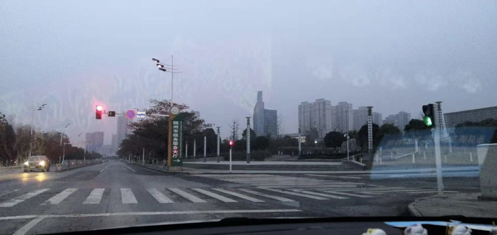
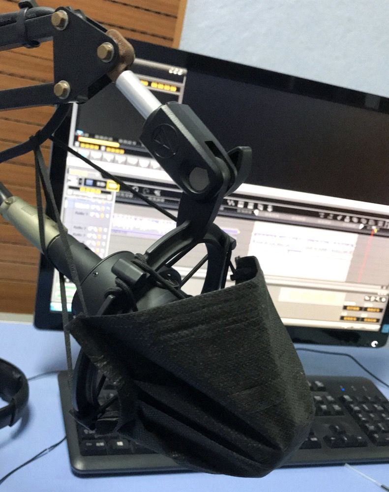

封城后，武汉人在经历什么
原文链接 备份链接 1月23日凌晨，武汉宣布自10时起，全市的航空、铁路、城市公交、地铁、轮渡、长途客运暂停运营，无特殊原因，市民不要离开武汉。新型冠状病毒肺炎，正考验着这座九省通衢的特大城市。 此后24小时，真实故事计划访问了几位选择留 …
1月25日，湖北省襄阳市宣布暂停长途客运，自此，湖北省其他地级市已全部封锁。封城后的武汉面临物资紧缺问题，一夜间，全国各地发起驰援武汉行动，不断输送医疗资源至武汉。
在武汉周边，一些小城市及乡镇吸纳大量从武汉归来的返乡人口，在疫情冲击下，物资严重紧缺，医疗条件较差，处在困境之中。
对信息的钝感，是另一层面的“灯下黑”
口述：小江
湖北省孝感市 学生 20岁
口述时间：1月26日上午
我在南京读大学。1月13日，我从南京南站坐动车到汉口，又从汉口坐到孝感东站。当时我完全不知道（肺炎）这个事情，也没看到路人戴口罩。
1月17日，我从孝感坐城际车到武昌处理些私事，中间经过汉口，上来很多武汉口音的乘客。当天回家后，我开始发烧，家里药品种类齐全，我就没去医院。第二天，我和朋友去玩桌游，觉得身体特别疲惫，差点趴在桌游桌上睡着。
孝感距武汉不到80公里，但那个时候， 我没听说任何关于疫情的消息。直到21日，真假难辨的信息开始刷屏。作为一个大学生，应该不信谣、不传谣，我力所能及地辟谣，转发靠谱的消息。
小区旁的药店，口罩已经抢空了，我和姐姐只好跑到另一个繁华的城区去找药店。结果，街上的药店要么关门，要么口罩售罄，连普通的一次性口罩都要抢着买。孝感好像一下子进入魔幻现实状态，我有一点点被吓到。
烧一直没退，我谨慎地比对肺炎感染症状，反复检查体温和身体状况。接连几天，我窝在卧室里，连客厅都很少去。23日，我终于退烧，父亲不放心，带我去了医院。当时医院里人不多，医护人员都穿着防护服，带着口罩，全副武装的样子。
那天是腊月二十九，家人依照以往拜年的惯例，开车带我去走亲戚。虽然车程不过十几分钟，几乎不会在公共场合停留，我还是挺担心，跟父亲说，吃完午饭就回家，晚上在自己家吃。父亲不以为然，说这就是人情社会。我内心浮起大大的问号，如果人出事儿了，还有什么人情社会呢。
晚上，看到有相关行政指令，父亲的态度才开始转变。其他父辈的亲戚则比较难劝，父亲是兽医，一直用自己从医的专业知识说服他们带口罩，他用猪瘟类比，病毒如何传播，把养猪业弄得这么惨。
年三十白天，我刷QQ空间，看到一条视频，画面是医院的环境， 一位患者带着哭腔说，“医生，你救救我。”有人说视频里的场景是武汉的医院，但我听那个口音，明显就是孝感的。当时心里特难受。
我看到南京大学的同学自发组织了助力湖北捐助团，找靠谱的物资渠道，众筹采买，对接各个医院，还专门做了公众号和小程序。我参与了筹款，同时联系孝感高中的校友群群主，在群里扩散，父亲也帮忙发了朋友圈。
24日到25日，自助湖北援助团捐助了两批物资，通过顺丰绿色通道送至武汉。没多久，孝感的医院也和武汉周边近20座城市一起“化缘”，我们又发起了第三批捐助，对口武汉周边的城镇医院，希望能尽快缓解“灯下黑”的状况。
大年初一零点，孝感封城，伯伯和一些爷爷辈的亲戚终于意识到疫情的严重性，戴上了口罩。我想好了，如果再让我串门，我就直接把电话卡抽出来拔掉。
封城后，如何返京成了我最担心的事
口述：潘宁
咸宁市通山县 公司职员 24岁
讲述时间：1月25日晚
20号早上，我在公司搜了所有网上药店，没买到一个口罩——北京口罩脱销了。当天晚上在武汉转车，街上已经没有多少人，一刷微博全部是疫情进展，我突然有点担心。
可下了武汉到通山县的大巴，街上却几乎没有人戴口罩。通山县距武汉市仅三个小时车程，但县里获取信息渠道少，当时的宣传可能不太到位，人们对如何自我防护还是没有认知。
刚到家里时，爸妈也不了解肺炎的情况，我只好每天从早到晚给他们“洗脑”，发有关新闻和文章，强调出门一定要戴口罩，在我的全天信息“轰炸”下，他们总算意识到事情的严重性。
回家后，我几乎全天都在网上看新闻、转发医院的物资求助信息、在家族群里呼吁不要走亲访友，时间久了感觉整个人神经都是紧绷的。所以那天早上得知要去外婆家聚会，我一下就哭了出来。
几个表哥表姐刚从武汉回来，我特别担心会出意外。但乡村都看重人情，外公身体不好，孙辈们一年才回来一次，老人还是希望我们能去看看。一想到要和那么多人在一张桌子上吃饭、呼吸，我就特别崩溃，但不去也不行。最后在我的劝说下，全家带口罩在一起聚了一会儿。
24号咸宁市封路，紧接着第二天中午下面的县、村也封了。听到这个消息，我总算松了口气，往年初一到初七大家都要到处拜年，没有强制性措施不会放弃走动，现在路一封，最起码爸妈不用出去了，可以减少感染的风险。
但突然的封路也带来一大堆后续问题，我们这只有一条路连接县城，这条路一封就彻底出不去了。不知道村里是否有应急措施，如果我们有发热情况该去哪？求助谁？如果家里没有存粮的话，该去哪买物资？食品价格会不会上涨？现在这些都是未知数。
乡村生活、交通都比不上城市便利，村里还有不少老人，这些问题如果没有考虑好，很容易造成麻烦。
其实今年是我的本命年，也是我毕业的第一年，本来觉得这次回来家里人都会开开心心的过个年，我也攒了一点钱打算领父母去逛逛街、买点衣服，但是现在也没办法出门了。
除夕那天，我看完白岩松的诗朗诵后就再也看不下去春晚了。一切发生的都太迅速了，我只能安慰自己，照顾好家人，相信我们还是会挺过去的。
如今最让我担心的还是返京的事，不知道湖北什么时候能解封，如果假期结束还不能走，我的工作该怎么办？我每天都在倒数假期时间，过完年爸妈需要去福建打工，村里大部分年轻人也都要出去务工，如果出不去我们该怎样维生？
没有特殊情况，我应该不会回家了
口述：秦琴
湖北省随州市 某乡镇基层公务员 25岁
口述时间：1月26日下午
早上8点，工作群里发了通知，除人在外地、生病和哺乳期的同事，其余人员下午1点钟全部到岗。
正式通知前，群里的消息从来没断过，值班的同事24小时在岗，其他人24小时待命，领导全部照常上班。但真收到紧急到岗通知，我还是有点紧张，感觉就要奔赴战场了。
元旦前，就有肺炎的消息传来，街上零星能见到有人戴口罩，但当时大家都没太在意。1月21日，我单位所在的乡镇正式进入全面防护，市场监管所、派出所和城管都去菜场巡查，活禽市场逐一封锁，禁止买卖野味，一些经营场所也纷纷开始消毒。群里发通知，说是情况严峻，要我们重视起来。
虽然一直陆续有关于武汉肺炎的文件和报道，但好像是一下子，疫情就变得很严重。工作指令下得特别突然，也可能之前有相应措施，只是我在基层，不知道而已。那些官方通知，我们基层公务员和民众接收到的时间差不多，我们知道的时候，也会同时对外公布。
区里要给农村和城镇的困难群众发口罩、体温计等医护用品，我给一个厂家打电话订购体温计，他们说，体温计都被市监局定走了。24日零点，随州封城，网吧、酒吧和公共浴室都关业了，福利院、特殊学校和养老院早就不允许进出了。

受访者供图 | 随州市街上
有些小乡道尚能通行，下属随州的一个乡镇，离武汉仅相距140公里，熟路的人开车不到两个小时就能跑回来。昨天，乡道封锁，所有村子都隔离了。
封城后，我一直没出门，每天中午定时汇总各村情况，登记从武汉返乡的人员，身体状况怎么样，是否隔离，再向上级汇报。
25日之前，随州没有试剂盒，一些疑似感染的病患难以确诊，人心惶惶的。但我爸始终不清楚状况，腊月29那天，他还去了麻将馆，没做任何防护措施。我跟他反复强调好几次，他才不敢再出门。
我家离单位所在的乡镇有一个半小时的车程，街道实施交通管制，我打了好多电话才找到能送我到镇上的车。因为交通管制，物流也保证不了时效，我年前买了些口罩，今天才发货。
下午开完会，就要正式全面深入摸排核实武汉返乡人员，严防瞒报疑似感染病例。同事们都去村里发宣传单和口罩了，我现在在办公室值守。每个村仅能供给一盒外科口罩，原本是给值班执勤人员备的，同事出去的时候，每人都只带了一层外科口罩。据说，一批援助随州的防疫物资已经在路上了，会先供给医院，医护人员的情况比我们更紧急。
我所在的乡镇有四万左右人口，工作很多，任务很重，没有特殊情况，我应该一直住在单位宿舍，不会回家了。
赶回家乡后，我一个人过了春节
口述：郭佳佳
湖北省黄冈市 学生 24岁
口述时间：1月26日上午
1月24日，除夕夜，我一个人在家中吃完了年夜饭。
1月初时，父母到江苏照顾生病的外婆，我在外地实习没能赶过去。等到实习结束，父母嘱咐我先回黄冈，等在家过完年后再一起去看外婆。
原计划父母会在1月23日经由武汉返回家中团聚，可就在他们返程的前几天，关于肺炎的各种消息突然都冒了出来。钟南山院士讲话后，关于封城的消息更是传个不停。
父母都慌了神，不放心我和姐姐独自在家，急着想赶回来。在医院做护士的姐姐更担心病毒的传染性，说什么也不肯让他们回湖北。一番争执后，父母最终退了回家的票，准备留在江苏陪外婆过个新年。
这几天，我守在家中不停刷微博，眼看着确诊病例逐步增加，求助信息也越来越多，脑袋里轰隆轰隆地响，不知道为什么短短几天事情就变成了这样。
姐姐越来越忙，她并没在定点收治肺炎病人的医院工作，但来看发热的病人也挤满了门诊。
自从医院里发热病人增多后，姐姐怕出现意外情况传染给我，一直没敢回家，搬到了同事家中，我也不敢再给她增加压力，只能每天守着微信等她报平安。
听她说，医院储备的防护物资不太充足，医生和护士只能定量领取，我连跑了十几家药店，均被告知口罩已经断货，网上也买不到能立即发货的医用口罩。
网上大部分都是有关武汉的情况报道，我只好不停在各种渠道转发黄冈各医院的求助信息，希望外界能尽快注意到我们这的情况。
23日，武汉确定封城，当天晚上包括黄冈在内六个地区也发布了封城消息。我一边庆幸父母没有赶着回来，不然不知道要面对怎样的窘境，一边又在担心姐姐的状况，可在一片混乱中，除了不停转发求助信息，我什么也做不了。
那天晚上，我还梦见外婆病危，等着见我最后一面，但我赶到高速路口又不能出城，吓出了一身冷汗。
除夕夜里，姐姐在医院值班，我一个人在家中过完了春节。怕父母担心，我特意做了好多菜摆在桌子上和他们视频，可一口都吃不下去。二十多年来，这是我们一家人第一次分开度过了除夕。
初一早上，家里和街上依旧冷冷清清，好在志愿者对接群里传来消息，一批社会捐赠的医用防护物资即将抵达黄冈，我这才多少放下心来。
防疫战场上的新闻新兵
口述：苏洋
湖北省鄂州市记者 25岁
口述时间：1月26日晚
年三十儿那天，我去一家药店采访，当时国家已经明文规定不允许口罩坐地起价，但药店里口罩价格还是涨了不少。
好多人排队买口罩，我也买了40个，拆开发现，我买到的口罩包装上写着滤料是KN95，摸起来是棉布材质。我怀疑这种口罩不能起到防疫效果，反映给了药店和市场监管局。初一，我去药店看，这款口罩还在卖，我反馈给了市委督查办。相关部门联系我，要我提供口罩样本，他们会拿去检测。
之前，鄂州确诊感染病例是1例，今天我去第三医院采访，得到的确诊病例数据是3例，疑似病例50例。因为没有试剂盒，很难确诊，估计明后天数据会增加很多。
我闺蜜在武汉，她婆婆在住院，送婆婆去医院回来后几天，她开始咳嗽，吃了很多药也没好，后来有了腹泻的状况，她才去医院做CT检查，查出来是肺炎感染早期。医生建议她在家里隔离，开了些药，如果再不去医院，病情拖得严重了就比较复杂。
鄂州的医疗条件没有武汉好，医院也少，下面一些乡镇的村民防疫意识不高，很多都不愿戴口罩，照旧串门拜年。有些市民出现干咳、泻像的症状，但医院里病患饱和，很多人担心交叉感染，有疑似感染症状也不敢贸然去医院检查，就这么从感染早期拖到中期。还有一些人，不清楚情况，正在想方设法地离开湖北。
为了控制人员流动引发的传染风险，今天中午12点开始，除经许可的应急保供运输车、公务用车外，中心城区实行机动车禁行，132台出租车统一征调，作为紧急情况的交通保障。有个同事晚上十点钟才下班，只能蹬着共享单车回家，还感慨说，半夜骑车，实在太酸爽了。

受访者供图 | 电台主持人的工作护具
鄂州市第三医院是防疫的主战场，确诊和疑似感染的病人都会被送去隔离。今天出门采访前，爸妈劝我别去，因为我在1月14日查出呼吸道感染，不是病毒性的，但一直在咳嗽，他们担心我会被感染。我没管那么多，脸都没来得及洗，穿好衣服，戴上口罩就出发了。
医院现场，我看到市领导、院长和医护人员，也几乎都只带了一个口罩，没有全套的防护设备，还在激烈地讨论防疫工作。市领导作出指示，要把三医院的一个戒毒所拆掉，改造升级成小汤山那样的防疫所，专门收治确诊的患者，计划在15天内落成。
回家后，我老爸站在门口，拿着消毒液，把我全身消了个毒。我拿着酒精把钥匙和采访本都擦了一遍，衣服脱在通风的地方。其实我也有点慌，不知是不是心理作用，回家之后我就开始腹泻。
我从2018年9月开始做记者，算是新闻新兵。上学的时候，老师们都说，好记者一定要有担当和责任。微博上有好多鄂州人，特别恐慌，想知道到底怎么了，他们怕自己接收到的信息不公开、不透明。这几天我不停地发自己采访了解到的消息，想让他们安心下来。
现在，鄂州最急迫的需要是医护物资，和市民的防疫用品。药店里的医护用品，包括体温计，都没得卖了。超市的货品也供应不足，大桶的矿泉水、大米全部售罄。超市老板跟我讲，你是记者，能不能告诉我，什么时候是个头啊这个事情。
我们记者再不对外发声，武汉周边的小城市似乎会被忽视。我不想让我的城市因为信息闭塞，就这么被遗忘掉。
*为保护受访者隐私，文中部分为化名。
-———————————————————————-
撰文 | 刘妍 马延君
版式 | 曾杏
原文链接 备份链接 1月23日凌晨，武汉宣布自10时起，全市的航空、铁路、城市公交、地铁、轮渡、长途客运暂停运营，无特殊原因，市民不要离开武汉。新型冠状病毒肺炎，正考验着这座九省通衢的特大城市。 此后24小时，真实故事计划访问了几位选择留 …
原文链接 备份链接 作 者：叶青 中南财经政法大学教授、博导 湖北省统计局副局长 正和岛蓝色岛邻 来 源：正和岛（ID：zhenghedao） 我算是外来的武汉人。 1979年10月从老家福建建阳到湖北财经学院（即现在的中南财经政法大学） …
原文链接 备份链接 截至1月28日，国家卫健委称，已向湖北派出近6000人的医疗队，支援湖北的疫情防治工作。全国各地医护人员和物资救济，正在缓慢改变武汉的应对现状。武汉也在不断总结和调整应对举措。随着各地输入病例不断增多，武汉防疫中的操作 …
原文链接 备份链接 自新型肺炎疫情爆发以来，湖北乃至全国多个省份的医院因防疫物资短缺，向社会发出求助。而另一种声音却在说防疫物资是充足的，没有短缺。一时之间，防疫物资成为了薛定谔的猫。 今日来信的这位作者，便是自发为一线医院筹集防疫物资的 …
原文链接 备份链接 几位口罩行业的从业者，都是在大量微信、电话疯狂轰炸的间歇，接受我们采访的。所有人的语速都异常急促——在过去的一周时间内，他们接过工信部、各地应急办、市级政府的电话；也接过各省医院、药店、大小代理商的电话；还有从未打过交 …